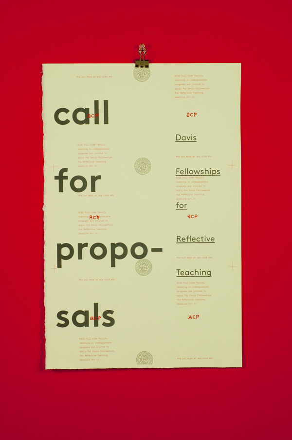
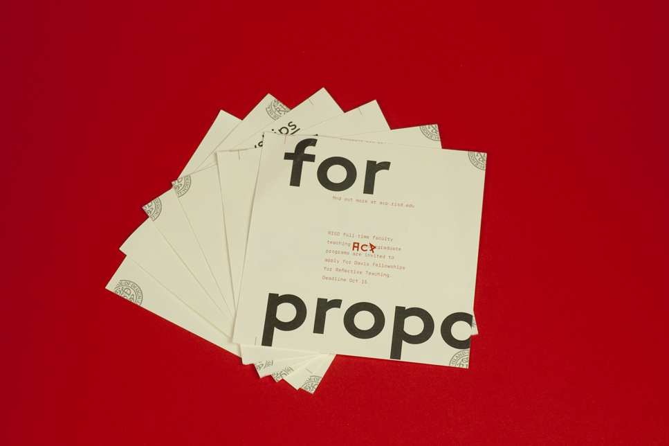

---

layout: default
title: cls / portfolio / acp
back: "../../index.html"
caption: academic commons program

---

<p>As of the fall of 2013 I'm the designer for RISD's <a href="http://acp.risd.edu/" target="_blank">Academic Commons Program</a>, which gives faculty and graduate students grants to craft interdisciplanary courses and projects to enrich the undergraduate experience at RISD. This poster can be displayed at 11x17 size or cut up into mailbox-sized fliers. The ACP identity was designed by <a href="http://andrew.lu" target="_blank">Andrew Lu</a>.</p>





